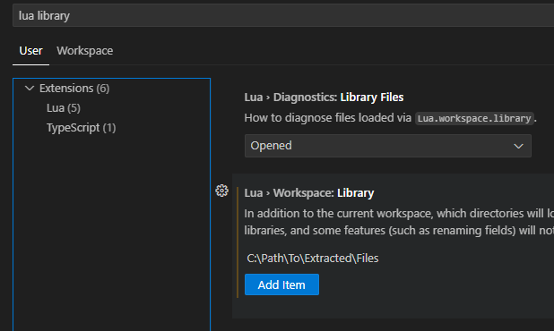

Auto-completion
The extension doesn’t add any auto-completion on its own for the TTS API. However, it’s possible to add that via the Lua extension for VS Code. Since this is a dedicated extension for handling Lua, it is far superior to whatever auto-completion this extension could provide, and it has also active support.
Setup
-
Install the Lua extension in VS Code.
-
Download the file
language-server.zipfrom the latest release and extract it somewhere at your local file system.-
Alternatively you could also clone linked git repository, so it’s easier to get updates on those files, if you are familiar with git.
-
-
Open the settings in VS Code and search for
lua library. Add a new item for this setting and add the path in your local file system where your extracted the file from before.
Usage
After setup, you can use VS Code’s auto-completion features to type function names and get possible functions to use, including some documentation about what the function does and what kind of parameters it requires.
It will also include your own written functions.
The same then also applies for returned values from function calls. E.g. when a function returns an object reference, you get possible functions you can call on this reference.s
And also function parameters.
E.g. in this example it lists the possible parameters to the createButton function and also denotes whether the argument is optional (with a ?) or required.
The extension offers many more features to help you improve your code and coding experience, e.g. by offering diagnostics or a formatter. Checkout its documentation for more details.
| The specification is possibly not complete and missed a few TTS APIs. If you want anything missing that should be added, please say so. It’s easy enough to extend. |